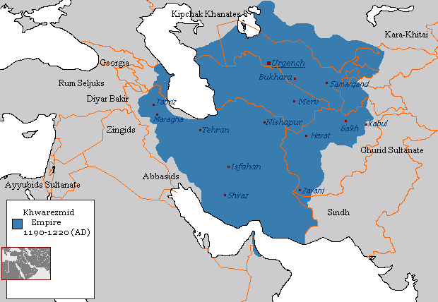
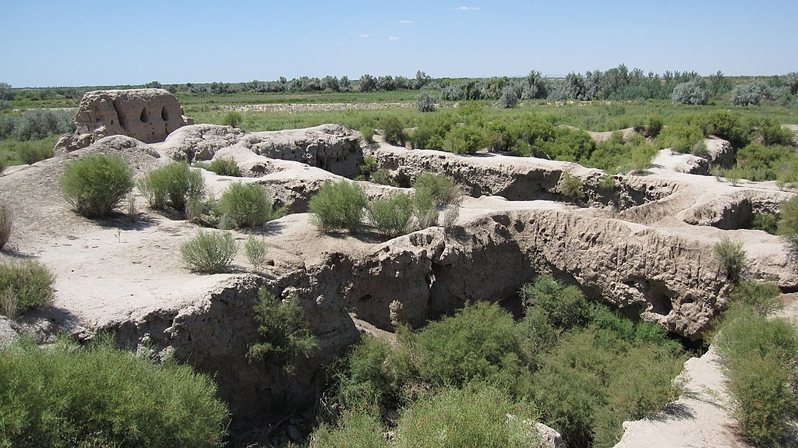

|   |
Xorazm (arabcha: خوارزم) — Amudaryo sohillarida markazga ega Oʻrta Osiyo qadimiy mintaqasi — qadimiy davlat[1][2][3] va rivojlangan irrigatsiyali dehqonchilik, hunarmandlik va savdo mintaqasi. Xorazm orqali Buyuk Ipak yoʻli oʻtgan. III asr oxirlarida Xorazm poytaxti Kat shahri boʻlgan; X asr oxirlarida poytaxt Urganch shahriga koʻchiriladi (hozirgi Koʻhna Urganch shahri).
Xorazm hududi qadimda Amudaryo adoqlaridan janubga tomon Murgʻob va Tajan daryolarining yuqori oqimlarigacha choʻzilgan. Shu boisdan bu qadimiy tarixiy hudud fanda 2 xil: Qadimiy Xorazm va Katta Xorazm nomlari bilan maʼlum. Xorazm haqidagi ilk maʼlumotlar Avesto, Doro I ning Behistun kitoblari, qadimiy yunon mualliflari (Gekatey, Gerodot, Strabon va hokazo) hamda ilk oʻrta asrlarning arab geograflari asarlarida mavjud.
Xorazm nomi
Miloddan avvalgi II asrga oid devoriy rasm, Akchaxan qalʼa „Xorazm“ nomi (toponimi) Avestoda Xvarizem, qadim forschada Xvarazmish, lotinchada Chorasmia va yunonchada Xorazmiya deb yuritilgan. Arabcha yozma manbalarda bu hudud Xvorazm talaffuzida tiliga olinadi.
„Xorazm“ nomining semantikasi haqida bir qancha fikrlar mavjud. Xorazm tarixining bilimdoni S.P. Tolstov „Xorazm“ nomi talqinlari orasida „Quyoshli oʻlka“, „Quyoshli yer“ deb atalishi haqiqatga eng yaqin etnonimdir deb taʼkidlasada, Xorazmni „Xvarri yoki Xarri (Xurriy) xalqi vatani“, „quyosh (xalqi) zamini“ deb izohlaydi. Sugʻdshunos olim M. N. Bogolyubovning fikricha, Xorazm alohida 3 ta soʻzdan tarkib topgan. Xu (Xush, Xash), var (vara) va zm (zim, zem). Eroniy tillarda Xu —"yaxshi" „maʼqul“, var (vara) — „devor“, „marza“, „fob“, „qalʼa“, „qoʻra“ degan maʼnolarni bildirgan. Zm (zim, zem) esa — „zamin“, „hudud“, „diyor“, „mamlakat“ kabi maʼnolarni anglatgan.
Xorazm nomi „oziqlanadigan zamin“, boshqasiga koʻra „past zamin“ degan maʼnoni anglatgan.[4]
Avestoning „Yasht“ qismida Xorazm „Ming irmoqli daryo“, „Koʻllar va oʻtloqlarga boy oʻlka“ sifatida madh etiladi. Qadimiy Xorazm hududi tabiiy jihatdan 2 mintaqaga ajralgan. Uning shimoliy qismida Amudaryo etaklarida behisob sersuv oʻzanlar, shimoliy va shimoliy sharqqa tomon yastangan keng yaylovlardan iborat bepoyon pastekisliklar, uning janubiy qismida esa, Murgob va Tajan daryolari vodiylarining kattagina qismi togʻ va adirliklar va ulardan boʻsh qolgan katta-kichik daryo jilgʻalar etaklarida yuzaga kelgan hosildor yerlar joylashgan.